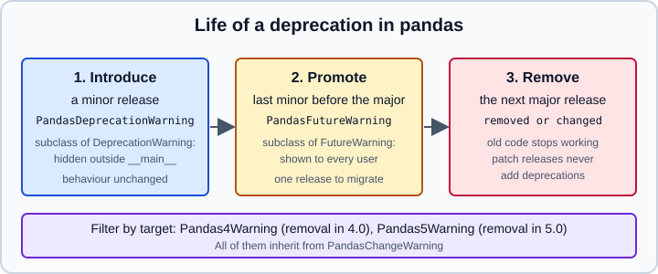

Installing pandas and Understanding Its Versions
|
This content was generated with the assistance of AI and should be verified against the official documentation before being relied on in production. |
Installing pandas looks trivial, and most of the time it is: pip install pandas works. The interesting questions come
afterwards. Which optional packages do you need to read Excel files or Parquet? Why does the same code print different
warnings on two machines? When may a function you use disappear? This page answers them for pandas 3.1 (3.1.0 was
released on 2026-10-22) running on Python 3.13 or 3.14; every statement was checked in October 2026 and every Python
example was executed on Python 3.13 with pandas 3.1.0 and NumPy 2.5.4. Python 3.11 is the oldest interpreter that pandas 3.0
and 3.1 support. It is written for readers who already know why an isolated environment is a good idea; the general
mechanics are documented in Setting Up a Data Science Environment and in the
Python pages of this site.
After installing, continue with 10 Minutes to pandas. If you come from another tool, the comparison pages are Coming from SQL and Coming from R & Spreadsheets. The release-by-release changes are in What’s New & Migrating to pandas 3.
Installing pandas
The pandas team distributes official packages through PyPI (pip), conda-forge (conda, mamba) and GitHub
(source and nightly builds). Packages from any other channel, including a Linux distribution’s own python3-pandas, are
not maintained by the pandas team and are usually older.
With pip or uv
Create a virtual environment first, then install:
python -m venv .venv
source .venv/bin/activate # Windows: .venv\Scripts\activate
python -m pip install --upgrade pip
python -m pip install pandasSource: pandas documentation, Installation.
With uv the same steps are shorter, and the dependency is recorded in pyproject.toml and
uv.lock:
uv init analysis && cd analysis
uv add pandas # core install
uv add "pandas[excel,parquet]" # with optional extras
uv run python -c "import pandas; print(pandas.__version__)"Wheels are published for the supported CPython versions on Linux, macOS and Windows, so no compiler is needed. The
extras syntax is the same for every installer; quote it so the shell does not treat the brackets as a glob
(pip install "pandas[excel]").
With conda
The pandas documentation recommends the Miniforge distribution, which is conda preconfigured with the conda-forge channel only:
conda create -c conda-forge -n analysis python pandas
conda activate analysisSource: pandas documentation, Installation.
Two rules prevent most conda problems. First, conda-forge and Anaconda’s defaults channel are not designed to be mixed:
use conda-forge with strict channel priority (conda config --set channel_priority strict), remove defaults from the
configuration and check where packages came from with conda list --show-channel-urls. Second, mind the licence: since
Anaconda’s terms of service update of 2025-07-15, a for-profit organisation with more than 200 employees or contractors
(affiliates included) needs a paid plan to use Anaconda’s own repository, while individuals, eligible academic institutions
and non-profits are free; packages on conda-forge carry their own licences. That is one reason to prefer Miniforge. This is
a summary, not legal advice; read the current terms. The full comparison of venv, uv and conda lives in
Setting Up a Data Science Environment.
What gets installed
Required dependencies
pandas 3.1 needs only three packages (the minimum is generally about two years old at the time of a pandas release):
| Package | Minimum | Notes |
|---|---|---|
NumPy |
2.0.2 (2.3.3 on Python 3.14) |
NumPy 1.x is no longer supported from pandas 3.1. |
python-dateutil |
2.9.0 |
Date parsing helpers. |
tzdata |
any |
Only on Windows and Pyodide (Emscripten), where the operating system has no time zone database. |
Source: pandas documentation, Dependencies.
Two things are missing from this list on purpose. PyArrow is optional: older articles saying it would become required
with pandas 3.0 are outdated, because that change (PDEP-10) was postponed. When PyArrow is installed, the default str
dtype uses it for storage, otherwise a NumPy-object-based implementation is used; the behaviour is the same either way (see
Text Data & the str Dtype and
PyArrow-Backed Data). And pytz is no longer required: pandas 3
uses the standard library zoneinfo for time zones by default, so pytz is not installed unless you ask for the
timezone extra.
Optional dependencies and extras
Optional packages unlock features and speed. Install one group with pip install "pandas[extra]", several with
"pandas[excel,parquet]", or everything with "pandas[all]". Minimum versions of optional packages are generally about
one year old.
| Extra | Packages (minimum version) | What it enables |
|---|---|---|
|
numexpr 2.11.0, bottleneck 1.5.0, numba 0.61.2 |
Faster |
|
matplotlib 3.10.5 |
|
|
Jinja2 3.1.6, tabulate 0.9.0 |
|
|
SciPy 1.16.1, xarray 2025.7.1 |
|
|
openpyxl 3.1.5, xlsxwriter 3.2.5, python-calamine 0.4.0, odfpy 1.4.1, xlrd 2.0.2, pyxlsb 1.0.10 |
Reading and writing Excel and OpenDocument files. The xlrd and pyxlsb engines are deprecated in 3.1: use python-calamine. |
|
beautifulsoup4 4.13.4, html5lib 1.1, lxml 6.0.0 |
|
|
lxml 6.0.0 |
|
|
pyarrow (see below) |
|
|
pyarrow 16.0.0 |
|
|
PyIceberg 0.9.1 |
|
|
PyTables 3.10.2 |
|
|
pyreadstat 1.3.0 |
|
|
SQLAlchemy 2.0.42, psycopg2 2.9.10, pymysql 1.1.1, adbc-driver-postgresql 1.7.0, adbc-driver-sqlite 1.7.0 |
|
|
fsspec 2025.7.0, s3fs 2025.7.0, gcsfs 2025.7.0 |
Reading and writing |
|
PyQt5 5.15.11, qtpy 2.4.3 |
|
|
Zstandard 0.23.0 |
Zstandard-compressed files. |
|
pytz 2020.1 |
Only for code that still passes |
|
pytest and plugins |
Running |
|
every optional package above |
Convenient for a throwaway environment, heavy for a deployment. |
Three details are worth knowing. read_html needs a parser that works: beautifulsoup4 alone does not, you also need lxml,
html5lib or both. read_orc is best served by a conda-installed PyArrow and does not work on Windows. And the PyArrow
floor differs by entry point: the package metadata of pandas 3.1.0 asks for pyarrow>=13.0.0 through parquet and
feather but pyarrow>=16.0.0 through pyarrow and all, while the runtime check that decides whether pandas will use
PyArrow is 16.0.0, which is also the minimum in the documentation table. Installing pandas[pyarrow] or pandas[all]
therefore avoids an old PyArrow that pip would otherwise accept.
You can ask the installed package which extras it declares and what each one pulls in:
from importlib.metadata import PackageNotFoundError, requires, version
extras = {}
for req in requires("pandas") or []:
if "extra ==" in req:
spec = req.split(";")[0].strip()
extra = req.split("extra ==")[1].strip(" '\")")
extras.setdefault(extra, []).append(spec)
for name in ["performance", "plot", "excel", "parquet", "timezone", "all"]:
print(name, "->", len(extras[name]), "requirements; first:", extras[name][:3])
for pkg in ["numpy", "pandas", "pyarrow", "numexpr", "pytz", "tzdata"]:
try:
print(f"{pkg:12s}", version(pkg))
except PackageNotFoundError:
print(f"{pkg:12s}", "not installed")Output on the test environment (which has no pytz):
performance -> 3 requirements; first: ['bottleneck>=1.5.0', 'numba>=0.61.2', 'numexpr!=2.14.1,>=2.11.0']
plot -> 1 requirements; first: ['matplotlib>=3.10.5']
excel -> 6 requirements; first: ['odfpy>=1.4.1', 'openpyxl>=3.1.5', 'python-calamine>=0.4.0']
parquet -> 1 requirements; first: ['pyarrow>=13.0.0']
timezone -> 1 requirements; first: ['pytz>=2020.1']
all -> 36 requirements; first: ['adbc-driver-postgresql>=1.7.0', 'adbc-driver-sqlite>=1.7.0', 'beautifulsoup4>=4.13.4']
numpy 2.5.4
pandas 3.1.0
pyarrow 26.0.0
numexpr 2.14.2
pytz not installed
tzdata 2026.6Source: Python documentation, importlib.metadata, applied to the metadata published by pandas.
Checking the installation
pandas.show_versions() prints the interpreter, the operating system, pandas itself and every optional dependency it
knows, with None for the ones that are missing. It is the first thing to paste into a bug report, and the quickest way
to find out why a feature is unavailable:
import pandas as pd
print(pd.__version__)
pd.show_versions()3.1.0
INSTALLED VERSIONS
------------------
commit : c6f46769b808eb60218189d089dd67841b44f1b9
python : 3.13.18
python-bits : 64
OS : Darwin
...
pandas : 3.1.0
numpy : 2.5.4
...
numexpr : 2.14.2
...Source: pandas.show_versions.
To exercise the whole test suite of an installed copy, install the test extra and call pandas.test(); the
documentation points out that an occasional failure does not necessarily mean a broken installation. For a notebook
or report, record the versions next to the results (see
Reproducibility & MLOps Basics).
A common surprise is that pandas is installed in one environment while the notebook runs in another. Inside a
notebook, run import sys; print(sys.executable) and compare it with the interpreter you installed into; the cure is
a kernel registered for the project environment, described in
Jupyter Notebooks.
How pandas versions work
Semantic versioning, loosely
pandas uses a loose variant of semantic versioning: MAJOR.MINOR.PATCH. The rules in the project
policy are:
-
Patch releases (3.1.1) fix bugs and never add deprecations.
-
Minor releases (3.2.0) add features and introduce deprecations. A deprecated behaviour keeps working and emits a warning.
-
Major releases (4.0.0) are where API-breaking changes happen and where deprecations are enforced. A behaviour deprecated in 3.1.0 keeps working, with a warning, for all of 3.x and changes in 4.0.0.
-
Behaviour-changing bug fixes may arrive in a minor or even a patch release, because whether something is a bug fix or an API break is a judgement call.
-
None of this applies to features documented as experimental, which may change at any time.
Source: pandas documentation, Version policy.
The deprecation lifecycle (PDEP-17)
The community decided in PDEP-17 how deprecation warnings are staged, so that users see a warning exactly when they
can still act on it. Python hides DeprecationWarning unless it is raised in __main__ (or while running tests), so
a warning that is only a DeprecationWarning never reaches most end users. The lifecycle is therefore:
-
A minor release introduces the deprecation with a
PandasDeprecationWarning. -
In the last minor release before the next major, the warning is promoted to a
PandasFutureWarning, which Python shows by default. Users get one minor release in which to update their code. -
The next major release removes the behaviour.

Every warning about an upcoming change inherits from PandasChangeWarning, and the subclasses let you filter by the
release that will enforce the change:
| Class | Meaning |
|---|---|
|
Base class of all of the following. |
|
A change that will be enforced in pandas 4.0 (a |
|
A change that will be enforced in pandas 5.0 (a |
|
Emits |
|
Emits |
|
Emits |
pandas 3.1 deprecates the inplace= argument on drop, rename, reset_index, set_index, dropna,
drop_duplicates, sort_values, sort_index, eval and query, so it is a convenient way to watch the machinery
work. The first example makes the warning visible and shows its class; the second turns it into an error, which is what a
test suite should do to find every use before the removal:
import warnings
import pandas as pd
import pandas.errors as pe
df = pd.DataFrame({"a": [3, 1, 2], "b": list("xyz")})
with warnings.catch_warnings(record=True) as caught:
warnings.simplefilter("always")
df.sort_values("a", inplace=True)
for w in caught:
print(type(w.message).__name__, "|", str(w.message).splitlines()[0])
print([cls.__name__ for cls in pe.Pandas4Warning.__mro__[:4]])
# In a test suite or a CI job: every pandas 4.0 deprecation becomes an error.
warnings.simplefilter("error", pe.Pandas4Warning)
try:
df.drop(columns="b", inplace=True)
except pe.Pandas4Warning as exc:
print("raised:", str(exc).splitlines()[0])Pandas4Warning | The inplace keyword in DataFrame.sort_values is deprecated and will be removed in a future version (PDEP-8).
['Pandas4Warning', 'PandasDeprecationWarning', 'PandasChangeWarning', 'DeprecationWarning']
raised: The inplace keyword in DataFrame.drop is deprecated and will be removed in a future version (PDEP-8).The same filter can be set without touching the code, from the command line (the interpreter flag was run with
python -W error::pandas.errors.PandasChangeWarning script.py and made the script above fail at the deprecated call)
or through the PYTHONWARNINGS environment variable. Test runners such as pytest have their own filterwarnings
setting for the same purpose.
Version history
The versions that matter in October 2026, with the date printed in each release’s release notes:
| Version | Date | Remarks |
|---|---|---|
2.0.0 |
2023-04-03 |
Removed |
2.2.0 |
2024-01-19 |
Introduced the |
2.3.0 |
2025-06-04 |
Last minor of the 2.x series; 2.3.3 (2025-09-29) is the final 2.x release. |
3.0.0 |
2026-01-21 |
Copy-on-Write only, default |
3.0.6 |
2026-09-17 |
The last 3.0.x patch release. |
3.1.0 |
2026-10-22 |
Current release: |
3.2.0.dev0 |
development |
Upcoming: only available as nightly wheels (next section). |
Sources: PyPI release history of pandas and the pandas release notes.
Do not infer a fixed schedule from the table: 3.0.0 and 3.1.0 are nine months apart, and nothing in the project policy promises a cadence. Plan upgrades from the release notes, not from the calendar.
Upgrading from 2.x
Three steps avoid a long debugging session:
-
Upgrade to 2.3.3 first and run the test suite with warnings turned into errors (
python -W error::DeprecationWarning, or the pandas-specific classes above). 2.3 carries the warnings for most of what 3.0 removes, so this step lists the work. -
Fix the code, in particular chained assignment, string-dtype assumptions, frequency aliases and
inplace=calls (all described in What’s New & Migrating to pandas 3 and in the Copy-on-Write page). -
Then move to 3.0 and finally to 3.1, fixing the new
inplace=warnings.
The official migration guide lives at user_guide/migration.html; the older copy_on_write.html and
migration-3-strings.html pages are only redirects to it.
Nightly builds and the upcoming 3.2
Development wheels are built from the main branch and published on the Scientific Python nightly index. They carry the version of the upcoming release (3.2.0.dev0 in October 2026), may break at any time, and belong in a throwaway environment used to test your code against the next version:
python -m venv .venv-nightly
source .venv-nightly/bin/activate
python -m pip install --pre --extra-index-url https://pypi.anaconda.org/scientific-python-nightly-wheels/simple pandasIf pandas is already installed in that environment, uninstall it first (pip uninstall pandas -y). To build from
source instead, follow the contributing guide of the project.
Which Python and NumPy?
pandas 3.1 declares Requires-Python: >=3.11. The project says it mirrors the
SPEC 0 guideline for Python support, in which core packages drop a Python
version 36 months after its release and a NumPy minor after 24 months; the sections on SPEC 0 in
The Scientific Python Stack explain how that moves the minimum versions
over time. For new work use Python 3.13 or 3.14. Python 3.15 was released on 2026-10-09; check that wheels exist for every
package you need before choosing it.
On NumPy, pandas 3.1 needs 2.0.2 or later (2.3.3 or later on Python 3.14). A project that still pins NumPy 1.x must stay on pandas 3.0 or earlier. Mixing a very new pandas with an old compiled extension that was built against NumPy 1.x is the classic cause of "numpy.dtype size changed" import errors; upgrading the extension or pinning both consistently fixes it.
Outdated installation advice
| Older statement | Today |
|---|---|
"pandas will require PyArrow starting with 3.0" (late 2023 articles) |
Postponed; PyArrow is optional in 3.1 (PDEP-10). |
"pip install pandas" pulls pytz |
pytz is no longer installed; pandas 3 uses |
"NumPy 1.2x is supported" |
pandas 3.1 requires NumPy 2.0.2 or later. |
Python 3.8 to 3.10 supported (pandas 1.x and 2.0 to 2.2 era) |
pandas 3.0 and 3.1 require Python 3.11 or later. |
|
zsh treats the brackets as a glob; quote it. |
"Anaconda is free for everyone" |
Terms updated on 2025-07-15; see the licence summary above. |
Sources: pandas documentation, Installation and release notes.
Troubleshooting
| Symptom | Likely cause and fix |
|---|---|
|
The feature needs an extra: |
|
Install |
|
The kernel runs another interpreter; register the project environment as a kernel. |
Import error mentioning NumPy and binary incompatibility |
A compiled dependency was built for NumPy 1.x; upgrade it or pin pandas to a matching version. |
pip resolves an old pandas |
The interpreter is older than 3.11; upgrade Python or pin |
Behaviour differs between two machines |
Different pandas, NumPy or PyArrow versions; compare |